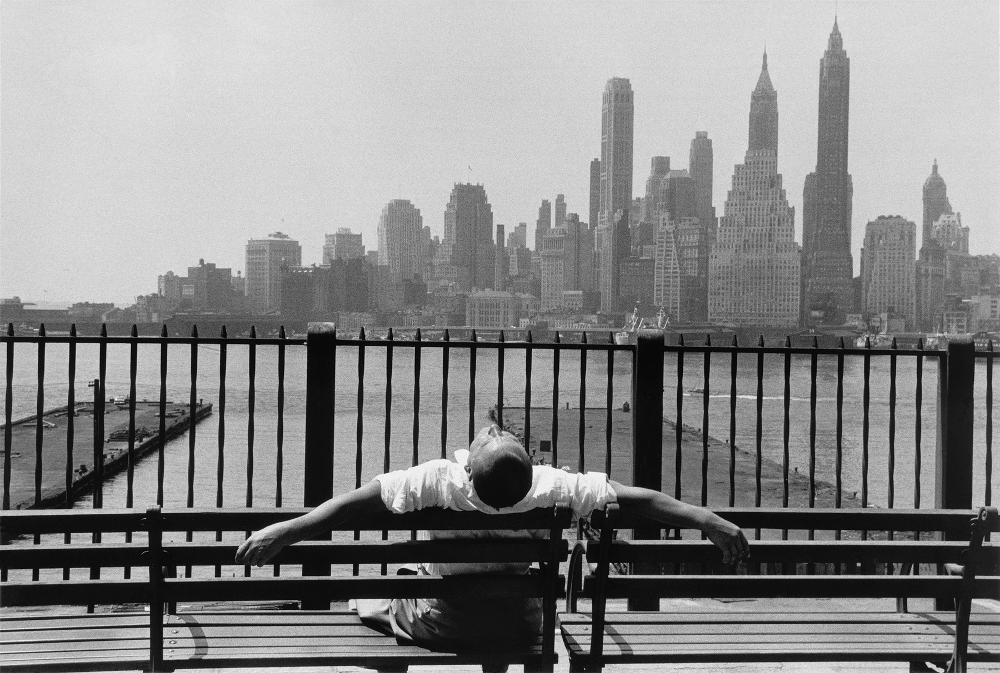
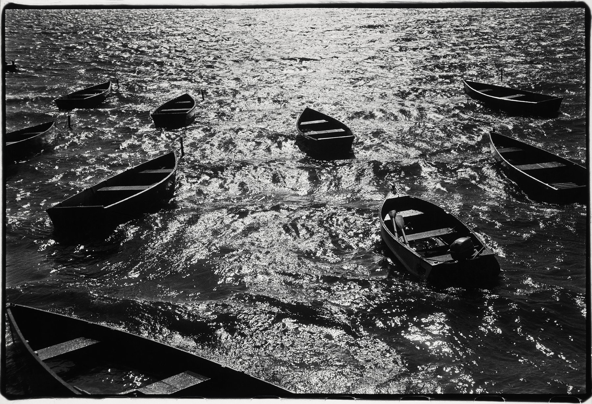
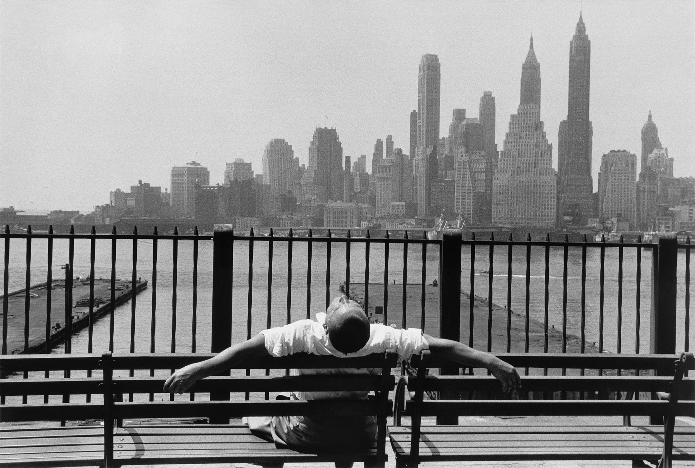
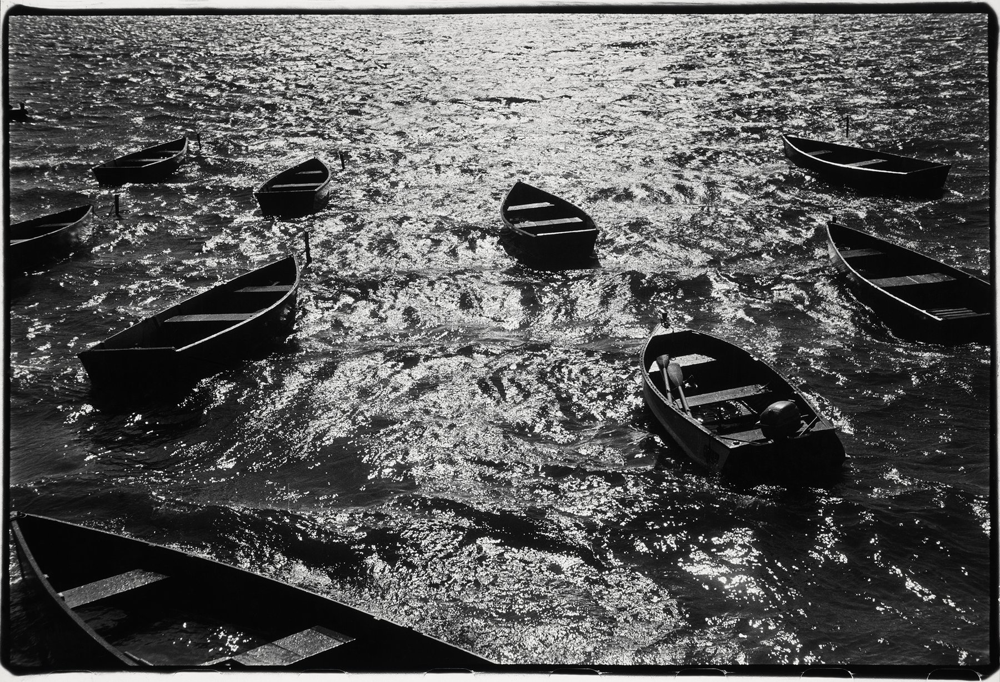

Louis Stettner
Traveling Light
October 27, 2018–May 27, 2019
Over the course of his eight-decade career, Louis Stettner created a singular approach to photographing everyday life. Born in Brooklyn in 1922, Stettner began working as a photographer in the 1930s and served in the U.S. Army in World War II before moving to Paris in 1947. There, he studied at the Institut des Hautes Études Cinématographiques, became friends with the influential photographer Brassaï (whose work will be on view on Floor 3 from November 17, 2018–February 18, 2019), and developed a unique point of view that melded the boldness of American street photography with the softer humanism more characteristic of his Paris contemporaries. For the rest of his life, he traveled between New York and Paris — his “two loves,” as he called them — constantly finding new inspiration in that geographical duality. From thoughtful images of rush-hour commuters to tranquil observations of daily routines, this thematic retrospective displays the remarkable breadth of Stettner’s work.